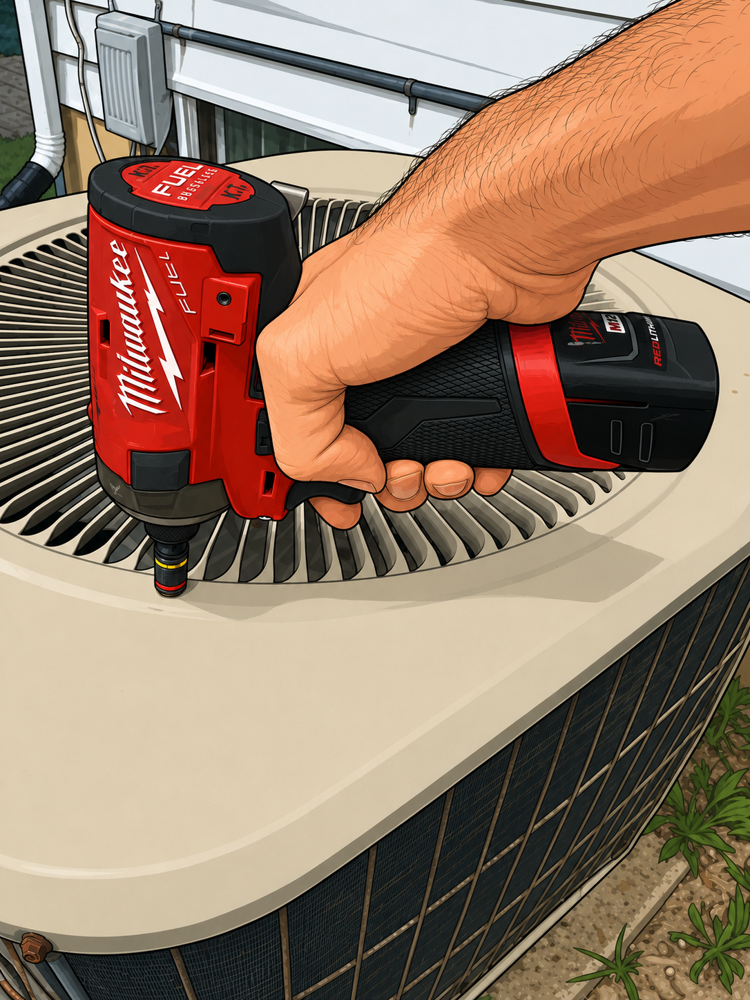
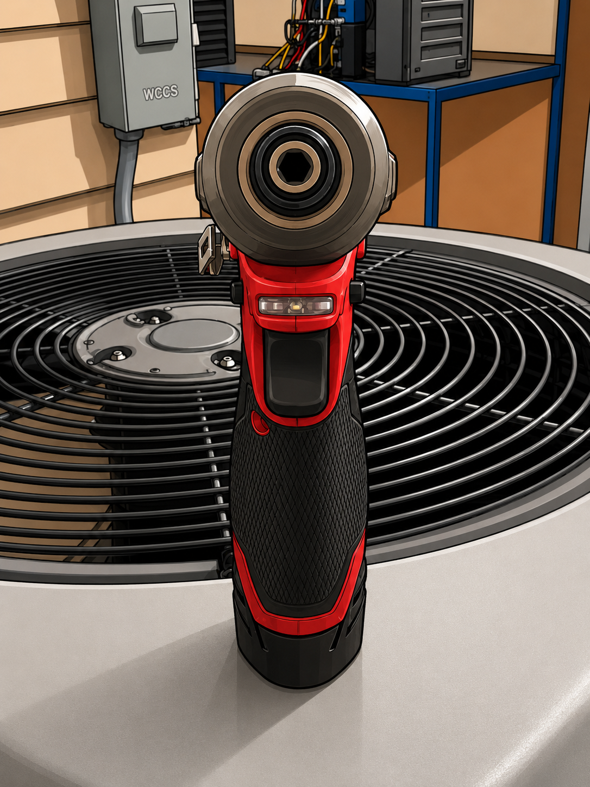
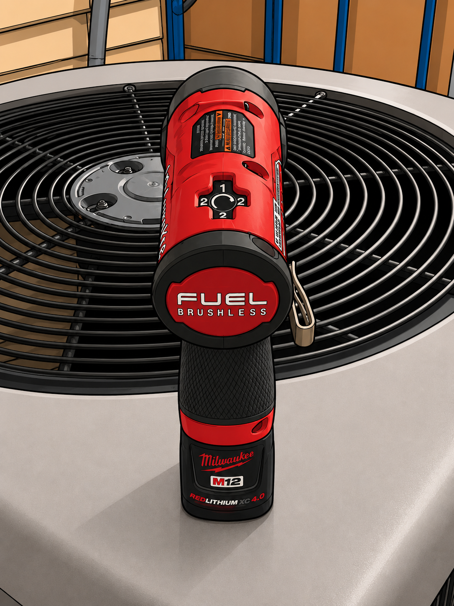

Impact Drivers
Learn how to identify impact drivers, understand their purpose, use them safely, and apply them correctly in the field.
Part 1: What Is an Impact Driver?
An impact driver pairs rotational force with rapid concussive blows, delivering short bursts of high torque instead of one steady twist like a standard drill. That extra punch drives long screws and stubborn fasteners in seconds without stalling the motor or camming out of the screw head. On the job, it's the tool techs reach for to fasten sheet metal screws, secure equipment panels, and drive lag screws into framing — anywhere a drill would bog down or strip the fastener.

Part 2: Identify an Impact Driver's Functions
Select each numbered marker to learn what it does, then use Next Image to move on.




Nothing selected yet — click a number on the tool to start.
Part 3: How You Use It
Impact drivers do the heavy lifting once you set them up right. Pick the correct bit, dial in a setting that matches the fastener, and let the impact mechanism do the work instead of leaning on the tool.
Match the Setting to the Fastener
Most impact drivers offer two or three speed/torque settings on a selector dial. Choosing the right one before you pull the trigger keeps you from stripping soft materials or stalling on tough ones.
| Setting | Best for |
|---|---|
| Low | Control board screws, thin sheet metal, anything that strips easily |
| Medium | General fastening — brackets, panels, everyday screws |
| High | Lag bolts, structural framing, long or stubborn fasteners |
Driving a Fastener
- Seat the bit fully in the hex chuck and confirm it's locked before you start.
- Square the bit to the fastener head so it doesn't cam out under impact.
- Squeeze the trigger lightly to seed the screw, then go to full trigger once it's biting.
- Ease off as the head seats flush — the impacts will taper off on their own.
Safety Reminder
Impact drivers hit hard and fast — keep your free hand clear of the bit, wear eye protection for the debris impact driving kicks up, and use reverse to back out a stuck fastener instead of forcing it.